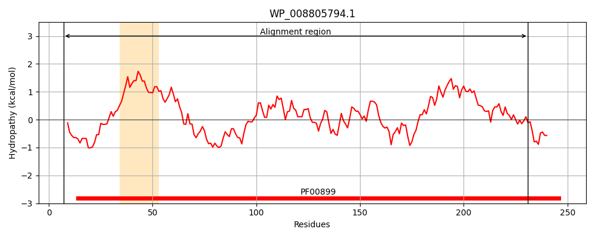
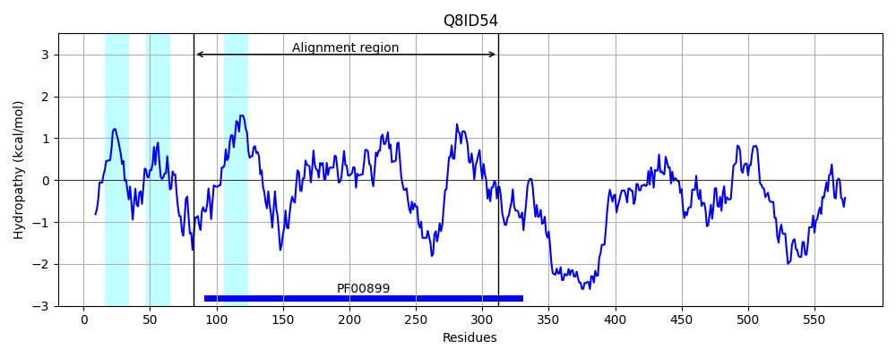
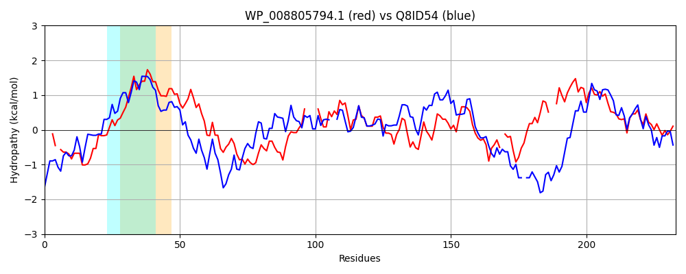

Hit Accession: Q8ID54
Hit TCID: 3.A.25.2.1
Hit Description: gnl|BL_ORD_ID|16318 gnl|TC-DB|Q8ID54|3.A.25.2.1 UBA/THIF-type NAD/FAD binding protein, putative OS=Plasmodium falciparum (isolate 3D7) GN=PF13_0344 PE=4 SV=1
Mach Len: 233
e:0.000000
Query TMS Count : 1
Hit TMS Count: 3
TMS-Overlap Score: 0.750000
Predicted Substrates:CHEBI:16670;peptide
BLAST Alignment:
Score: 280 , Bit scores: 112 bits, E-value: 2.2e-28, Alignment length: 233, Percentage identity: 30
Query: 7 DEEML-RYNRQIVLRGFDFDGQERLKAARVLVVGLGGLGCAAAQYLAAAGVGQLTLLDFDTVSLSNLQRQTLHSDATIGQPKVDSAREALARINPHV----RLVPLNALLDETALAGQIADHDLVLDCTDNVAIRNQLNAGCFQHTTPLVSGAAIRMEGQISVFTYQDG-EPCYRCLSRLFGENALT--CVEAGVMAPLVGTIGSLQAMEAIKLLTGYGTPASGKIVMYDAMT 231
D+E++ R+ + + + D ++ ++L++GLGGLG YL+ G ++ L+D D V SNL RQ +H + IG K SA+ L ++ HV + P LD+ I ++D+++DCTDN++ R +N C + L+ +A+ + GQ++V+ + CYRCL + F ++ C E G+++ + G IG LQA E IKL G + Y++ +
Sbjct: 83 DKEVIDRHGKLLNIYDIPHDSLYKIFNTKILIIGLGGLGSPVCLYLSKFGFKEIGLVDGDKVEKSNLHRQIIHKEKYIGLNKCISAKLFLKDMDVHVSDCIKCYPF--FLDKLNGINIIKEYDIIIDCTDNISTRFLINDLCILYKKKLIFASALGIYGQVNVYNLNNNTSSCYRCL-KSFNNHSQNNDCDENGILSTVTGVIGLLQANEVIKLSIGLDQDVLTNFLTYNSFS 312 | Protein Hydropathy Plots: |
|---|
|  |  |
Pairwise Alignment-Hydropathy Plot:
|
|---|
|  |